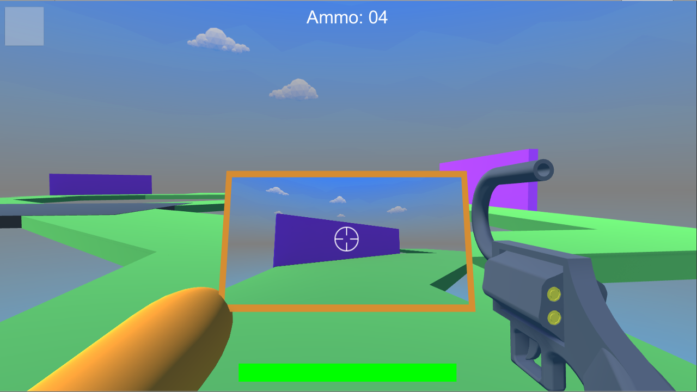

Rear Pew Mirror
About the Game
Rear Pew Mirror is a straightforward first-person shooter, with one important twist: you can only shoot directly behind yourself. To aid this,
players are given a rear-view mirror instead of a scope. In the main game mode, two competing teams of up to 4 players try to claim an objective and then keep it in their control until the timer runs out. There are also power-ups which you can use to sabotage other players. These include a boom box which shatters all enemy mirrors within a certain radius, a Medusa head which freezes other players when they look directly at you, and a decoy which spawns a fake teammate that only appears in enemy mirrors.

The Process
Our team of three programmers and one animator created a list of 100 game ideas for our game production class. We decided this was the most fun idea that was also feasible, so we went to work developing it. We planned our core gameplay mechanics, listed the powerups and maps we wanted, and went to work. We developed an initial prototype and nailed down our physics, shooting mechanic, and objective system. We then continued to tweak the gameplay while implementing the above powerups and one of our map ideas.
My Contributions
I tweaked some basic gameplay systems early on, but my main role was level designer. This was my first time designing a 3D level in a group project, and I'm pretty unfamiliar with first-person shooters, but I was up to the challenge. I researched what goes into a good FPS map and asked my teammates for advice. I looked through our map list and decided on "Small Players, Giant Room." I tried to use the bedroom furniture to create multiple lanes to the objective, and I adorned the room with "gamer" paraphernalia and meme posters to fit our silly theme. I also adjusted the furniture throughout playtesting to improve the sightlines.